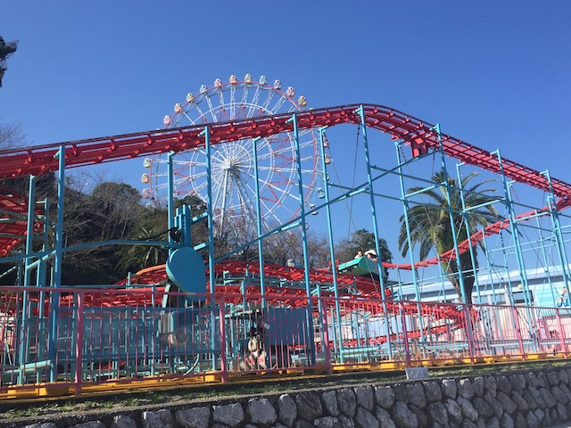
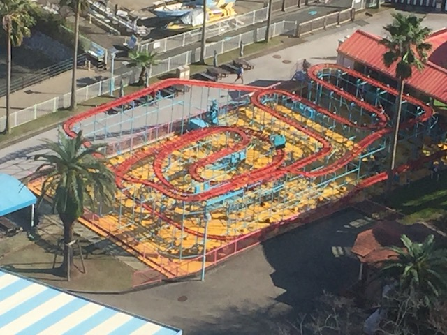
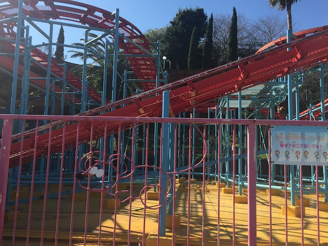
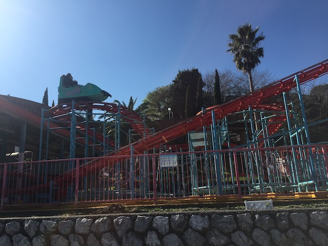
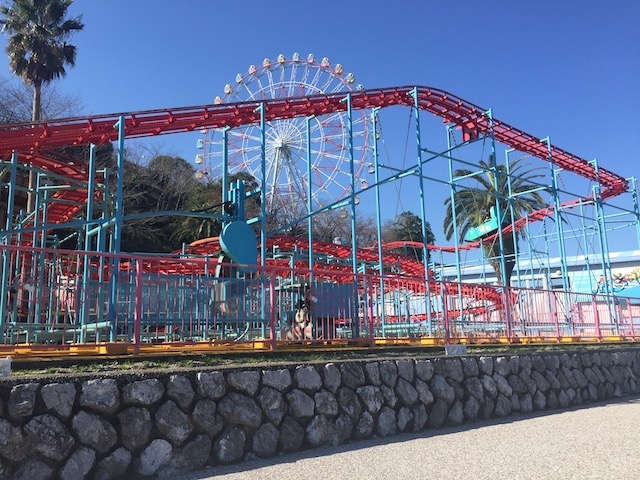
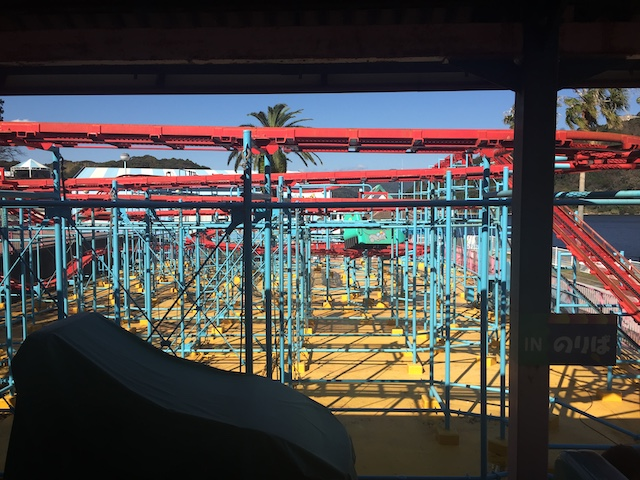
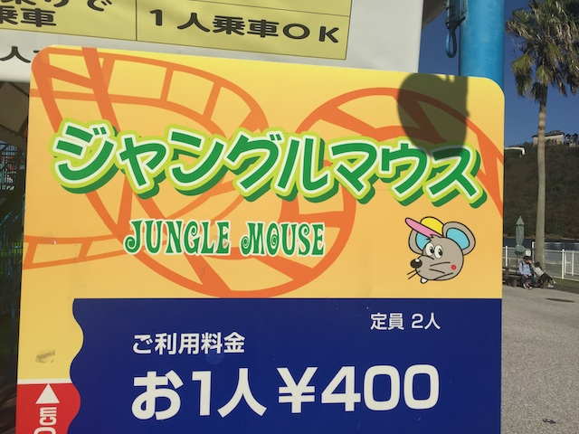

| |

Jungle Mouse Review

For today's review, we're gonna be traveling back in time to my visit to Hamanako Pal Pal, back when they had Jungle Mouse. This was their Wild Mouse coaster. Now you should know, this is not your standard run of the mill carbon copy Wild Mouse that appears at most parks. And no, it's sadly also not one of those AWESOME versions either. No, this one is....a locally made version. Specifically, it's made by a Japanese company called Sansei Yusoki, and....I've apparently ridden a handful of their rides while in Japan. And....none of them were good. Yeah. This manufacter isn't that good. Their Wild Mouse....it looks like a standard Wild Mouse layout. Except....this ride was BRUTAL!!! So yeah. Get in the low capacity cars (even by Wild Mouse standards, these are low capacity), pull down the lap bar, and away we went! We rolled out of the station around a sharp turn and began climbing the lifthill. We got a great view of Uchiuru Bay and the surrounding area. And also of the ride, but that's not nearly as pleasant to look at. We eventually reached the top, and headed through some straight track. Went around a tight turn, quick dip, SLAM!!! Then we hit a midcoures brakes. Oof. Not bad so far, kind of bland, but hey. We were just getting started. Went down another dip, rose up and SLAM!!! DAMN!!! Those laterals were HARSH!!! We then went through some straight track and into the standard Wild Mouse layout. Only MUCH rougher. Somehow, despite being slower than the regular Mice found at most parks, this one was actually rougher going around the turns. So yeah. Slow and Rough. Yeah. This mouse sucked. Went around another set of switchbacks. SLAM!!! Straight track. SLAM!!! Rinse and repeat. Well, at least there was a great view while doing this. Eventually, we broke away from the switchbacks, went through half a turn, some straight track, and then through a big swooping turn. Except it wasn't graceful and frankly, just felt jenky and rickety before heading into a couple more BRUTAL turns. We then headed into a downward helix. It didn't bank and just felt....kind of awkward. And rattly and rough too. SLAM!!! Another harsh turn out of that. BAM!!! Another inverted triangle shaped dip. WHAM!!! Abrupt stop into the brake run. So yeah. This ride sucked. It was slow, mediocre, rough, and just all around sucked. Though to be fair, this was still only the 2nd worst Wild Mouse ever (F*ck the shin-guards on Coast Rider). So it had that going for it. But hey. I guess if you were at Hamanako Pal Pal, wanted to credit whore, or just ride everything, and this didn't have a line, I guess you could've give it a ride. Sure, it sucked. But there are plenty of worse rides out there. This won't kill you. Meh. Still better it's gone. Hopefully it gets a good replacement soon.
5/10
Location: Hamanako Pal Pal
Opened: 1998
Died: 2025
Built by: Sansei Yusoki
Last Ridden: November 10, 2018
Jungle Mouse Photos






Home
|